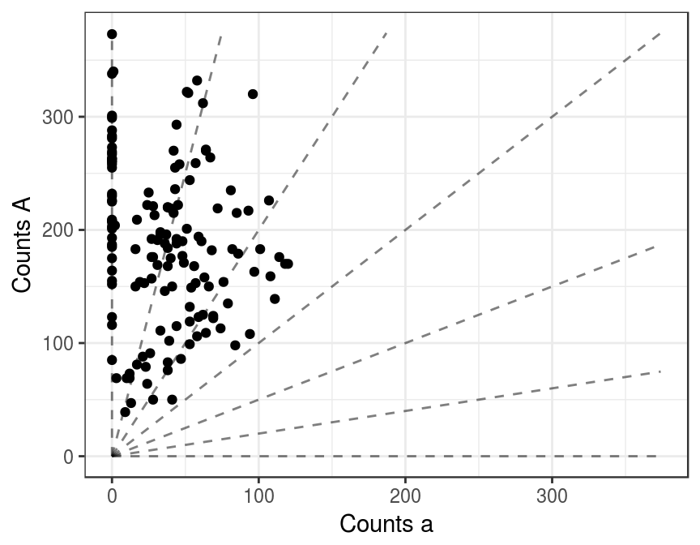
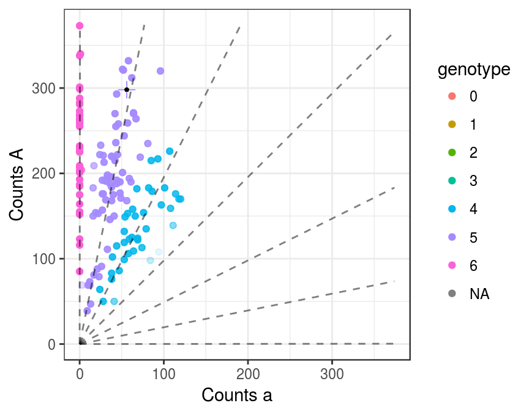
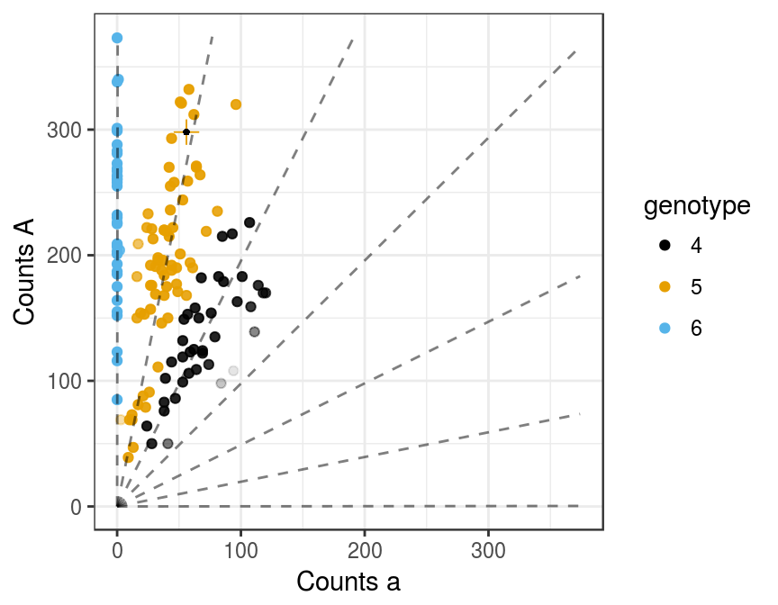
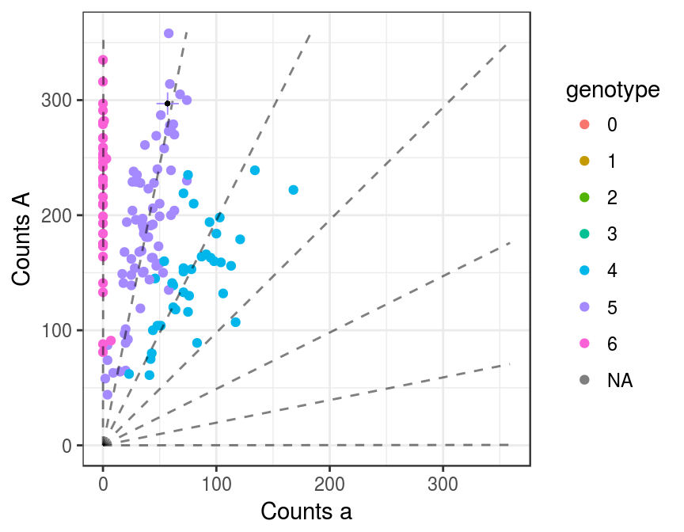

Updog is an empirical Bayes approach to genotype individuals (particularly polyploids) from next generation sequencing (NGS) data. We had in mind NGS data that results from a reduced representation library, such as “genotyping-by-sequencing” (GBS) (Elshire 2011) or “restriction site-associated DNA sequencing” (RAD-seq) (Baird 2008).
Updog wields the power of hierarchical modeling to account for some key features of NGS data overlooked in most other analyses: allelic bias, overdispersion, and outlying observations. Updog will also automatically account for sequencing errors.
To efficiently account for these features, updog needs to know the distribution of the individual genotypes in the population. Updog can accurately estimate this distribution if the population consists of full siblings (option model = "s1" or model = "f1") or if the population is in Hardy-Weinberg equilibrium (model = "hw").
Load updog and the snpdat dataset. The data frame snpdat contains three example SNPs (single nucleotide polymorphisms) from the study of Shirasawa et al. (2017). The individuals in this dataset resulted from a single generation of selfing (an S1 population). You can read more about it by typing ?snpdat.
set.seed(1)
library(updog)
data("snpdat")We’ll use the tidyverse to extract the First SNP.
library(tidyverse)
snpdat %>%
filter(snp == "SNP1") %>%
select(counts, size, id) ->
smalldat
head(smalldat)## # A tibble: 6 x 3
## counts size id
## <int> <int> <chr>
## 1 298 354 Xushu18
## 2 187 187 Xushu18S1-001
## 3 201 201 Xushu18S1-002
## 4 157 184 Xushu18S1-003
## 5 175 215 Xushu18S1-004
## 6 283 283 Xushu18S1-005We will separate the counts between the children and the parent (the first individual). Note that you do not need the parental counts to fit updog, but they can help.
pcounts <- smalldat$counts[1]
psize <- smalldat$size[1]
ocounts <- smalldat$counts[-1]
osize <- smalldat$size[-1]
ploidy <- 6 # sweet potatoes are hexaploidWe can first use plot_geno to visualize the raw data.
plot_geno(ocounts = ocounts, osize = osize, ploidy = ploidy)
Now we fit updog. We use model = "s1" because the individuals resulted from one generation of selfing of the same parent.
uout <- updog(ocounts = ocounts, osize = osize, ploidy = ploidy,
p1counts = pcounts, p1size = psize, model = "s1")We use plot.updog to visualize the fit. Points are color coded according to the genotype with the highest posterior probability. For example, a genotype of “4” represents four copies of the reference allele and two copies of the alternative allele (AAAAaa). The level of transparency is proportional to the posterior probability of a point being an outlier. The lines represent the mean counts at a given genotype. The “+” symbol with a black dot is the location of the parent.
plot(uout)
I have incorporated a colorblind safe palate.
plot(uout, use_colorblind = TRUE)
The fit seems reasonable. We can test how reasonable our genotype distribution is using summary.updog.
summary(uout)## $genotypes
##
## 0 1 2 3 4 5 6
## 0 0 0 0 39 66 37
##
## $summ_prob
## maxpostprob prob_ok
## Min. 0.5471 1
## 1st Qu. 0.9624 1
## Median 0.9978 1
## Mean 0.9486 1
## 3rd Qu. 0.9999 1
## Max. 1.0000 1
##
## $gof_pvalue
## [1] 0.6836688The goodness of fit \(p\)-value is quite large, indicating no evidence of lack of fit.
We can sample from the fitted model using rupdog.
rout <- rupdog(uout)If we plot the sampled output, it looks similar to the real data.
plot(rout, show_outlier = FALSE)
Baird, Paul D. AND Atwood, Nathan A. AND Etter. 2008. “Rapid SNP Discovery and Genetic Mapping Using Sequenced RAD Markers.” PLOS ONE 3 (10). Public Library of Science: 1–7. doi:10.1371/journal.pone.0003376.
Elshire, Jeffrey C. AND Sun, Robert J. AND Glaubitz. 2011. “A Robust, Simple Genotyping-by-Sequencing (GBS) Approach for High Diversity Species.” PLOS ONE 6 (5). Public Library of Science: 1–10. doi:10.1371/journal.pone.0019379.
Shirasawa, Kenta, Masaru Tanaka, Yasuhiro Takahata, Daifu Ma, Qinghe Cao, Qingchang Liu, Hong Zhai, et al. 2017. “A High-Density SNP Genetic Map Consisting of a Complete Set of Homologous Groups in Autohexaploid Sweetpotato (Ipomoea Batatas).” Scientific Reports 7. Nature Publishing Group. doi:10.1038/srep44207.